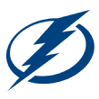
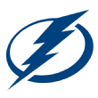

TampaSportsTV™

TampaSportsTV™
The Tampa Bay Lightning has clinched the Stanely Cup Playoffs and here is where you can find all the score and game updates throughout the playoffs.
Carolina Hurricanes (No. 1) vs. Tampa Bay Lightning (No. 3)
 3-2
3-2

Lightning lead series 2-1
No Goals Scored
5:15 Brett Pesce (2)
Assists: Andrei Svechnikov (4), Sebastian Aho (3)
7:40 Sebastian Aho (6)
Assists: Teuvo Teravainen (3), Jaccob Slavin (4)
 8:57 Brayden Point (6) (Power Play)
8:57 Brayden Point (6) (Power Play)
Assists: Nikita Kucherov (10), Steven Stamkos (7)
 16:18 Alex Killorn (6) (Power Play)
16:18 Alex Killorn (6) (Power Play)
Assists: Nikita Kucherov (11), Brayden Point (3)
No Goals Scored
5:57 Jordan Staal (5) (Power Play)
Assists: Sebastian Aho (4), Teuvo Teravainen (4)